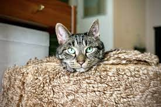
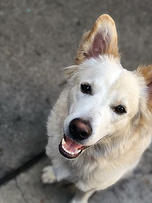

About Us
We are a local San Jose non-profit that takes in pets from shelters and individual donations. We will provide necessary vaccines and inspections at our own expense, and adopters do not need to worry about additional expenses. Everyone is welcome to donate to support our work. Our adopted pets include dogs and cats
 This is our partner website.Adopt a Pet